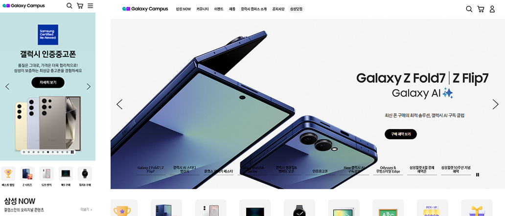

갤럭시 캠퍼스 스토어는 삼성전자 닷컴 내 별도로 운영되는 학생 전용 커머스 서비스로, 삼성전자 제품을 학생들에게 할인된 가격으로 제공하는 서비스입니다(2022년 기준, 2026년 앱 서비스 종료).
기획 의도

사용 도구
수행 단계별 산출물 목록
기획자로서의 성장 포인트
기획 PA로 투입되었지만, 중반에 기획PL이 이탈하면서 기획부터 런칭까지 프로젝트를 주도적으로 리딩할 수 있던 프로젝트였습니다. 신규 구축부터 런칭 이후의 결함 대응, 운영하면서 서비스 개편과 고도화까지 이끌었으며 적극적인 소통과 협업으로 서비스를 안정화시킴으로써 고객과 사용자의 만족도를 높일 수 있었습니다. 프리랜서로 SI프로젝트에 투입이 되면 분석에서 설계 단계까지만 근무하고 철수하는 경우가 많은데 갤럭시 캠퍼스 스토어 앱 프로젝트에서는 7월 앱 런칭 이후에도 서비스 안정화와 결함 관리, 이후 유지보수와 개선 작업까지 진행하며 내 설계에 대해 스스로 책임지는 경험을 할 수 있었습니다.